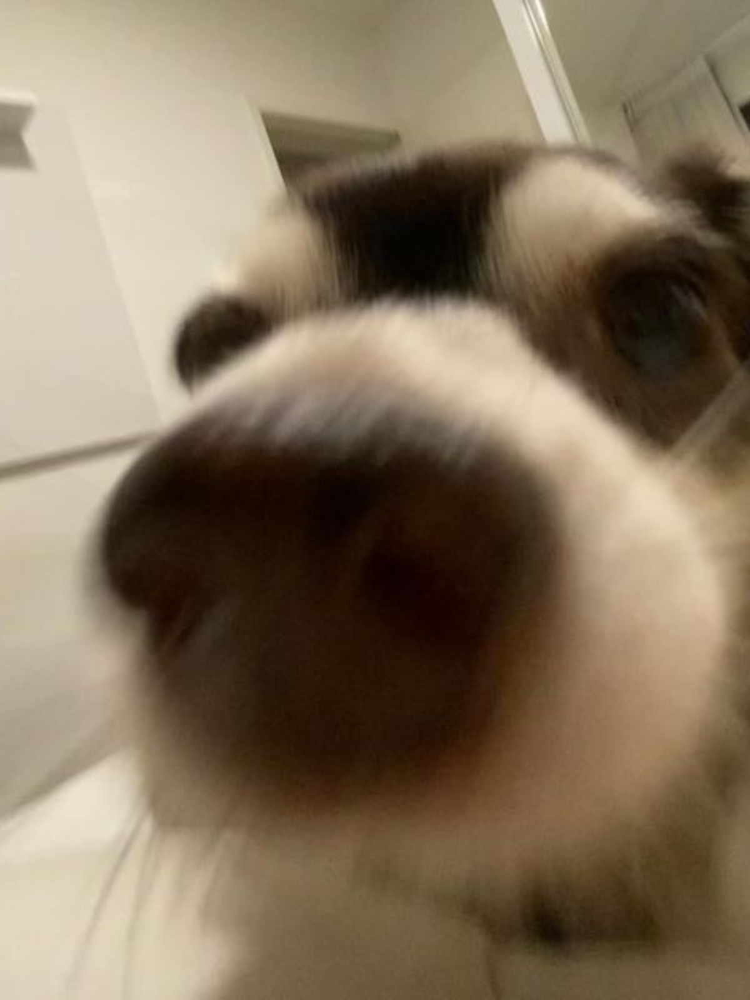
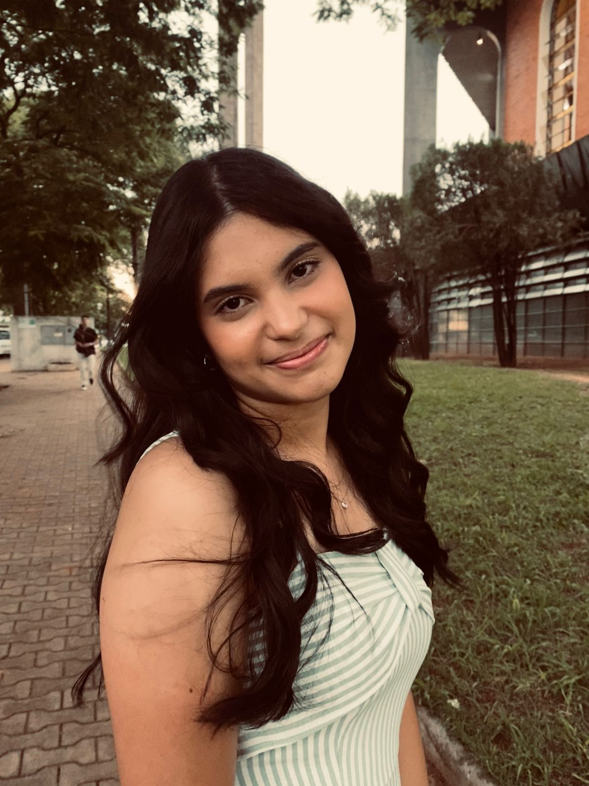
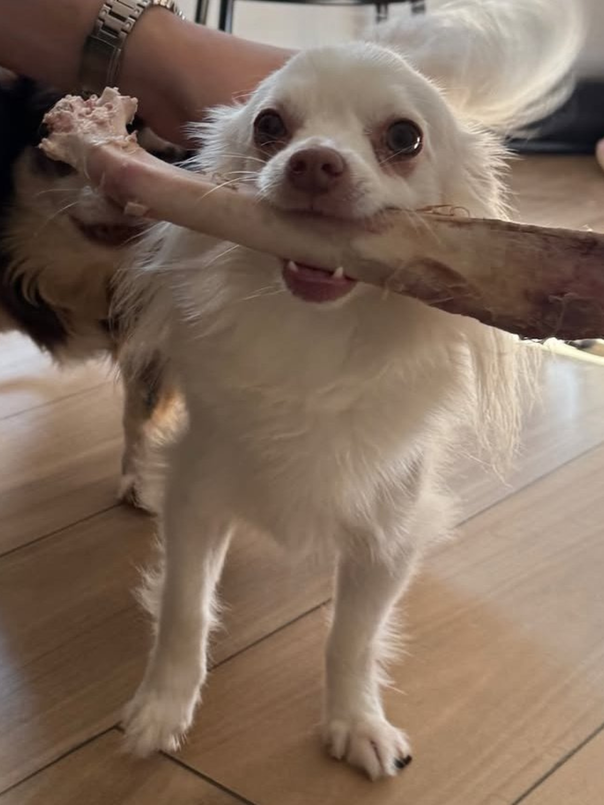
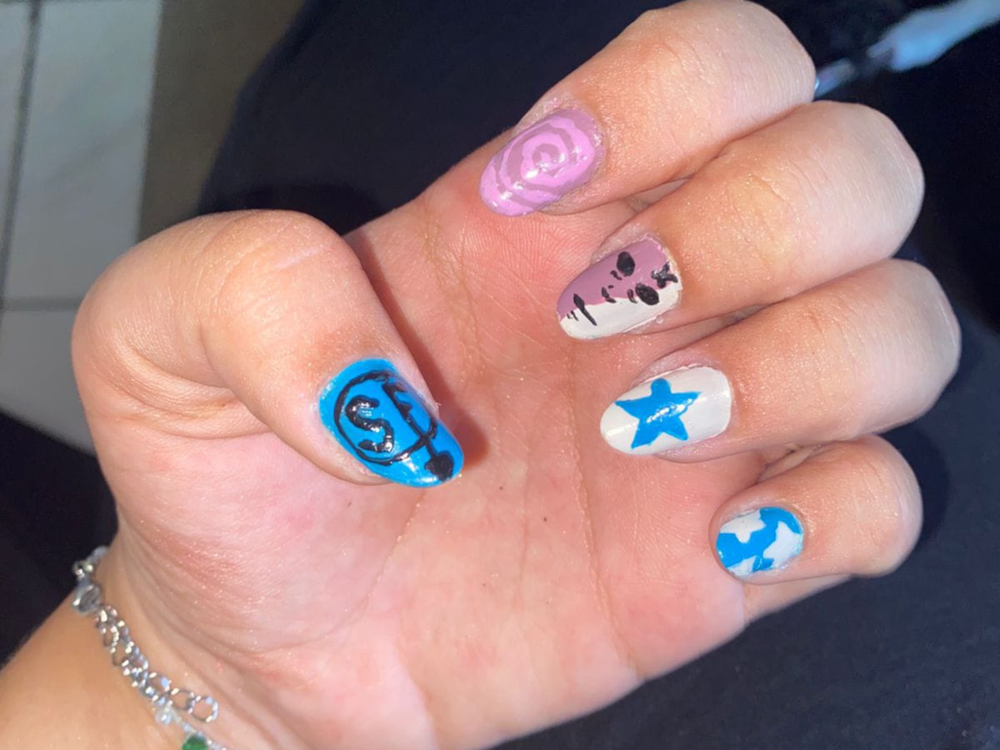
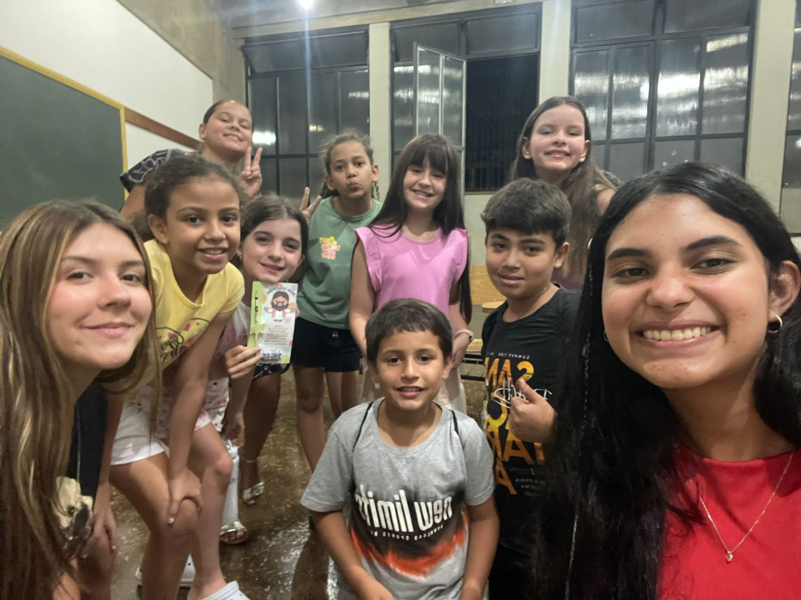
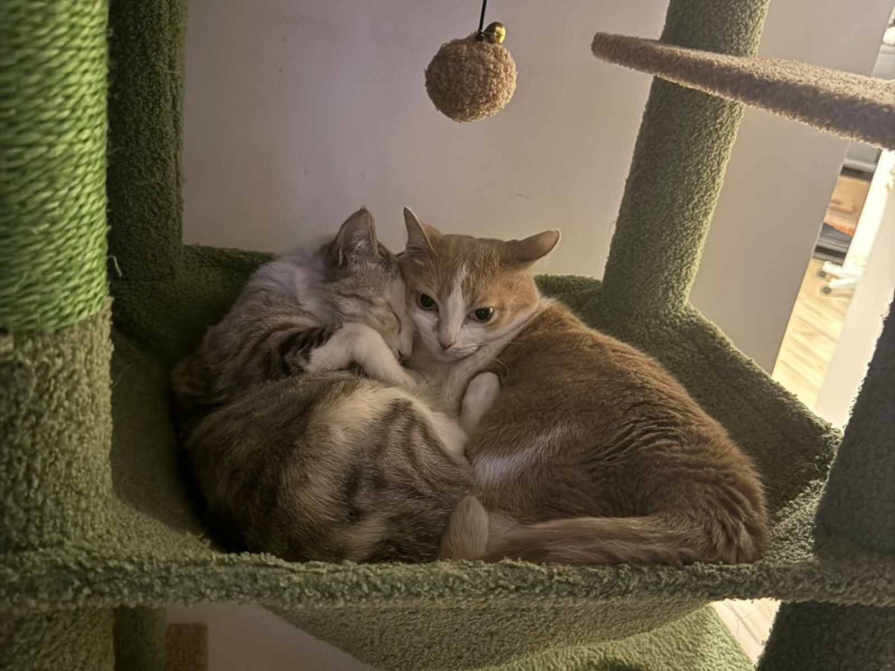

Bem-vindo ao meu site! 🤍
Esse espaço é como um cantinho meu, onde eu guardo lembranças,
mostro um pouco da minha essência e compartilho aquilo que faz meu coração feliz, um pedacinho
de quem eu sou, das coisas que eu amo e dos detalhes que tornam minha vida especial.
Amo animais, principalmente gatos e cachorros. Falo até mais do que deveria (rs),
valorizo muito os momentos com quem eu amo e adoro registrar tudo em fotos que guardam memórias.
Também amo fazer minhas unhas (mesmo quando elas ficam meio peculiares) porque é uma das formas
que eu tenho de me expressar.
Gosto muito dos detalhes, de deixar referências do que eu amo em tudo: em uma foto, na
bolsa, na decoração. Sempre colocando um pouquinho de mim em cada coisa.
Espero que você goste do que vai ver aqui🤍✨
Coisas favoritas!
Unhas
Eu amo fazer unhas diferentes, é uma das formas que eu mais gosto de me expressar. Essa aqui é uma das minhas favoritas! mas nem sempre elas ficam assim tão perfeitinhas… rsrs

Igreja
A igreja faz parte da minha vida
Sou do Caminho Neocatecumenal, estou sempre por lá e dou catequese com muito carinho

animais
Tenho um carinho enorme por animais! Eles são uma das coisas que mais me fazem feliz. Ainda não tenho um, mas é um sonho meu

Meu próprio mundo
Amo viver no meu mundinho, com as coisas que eu gosto e que me fazem feliz .png)